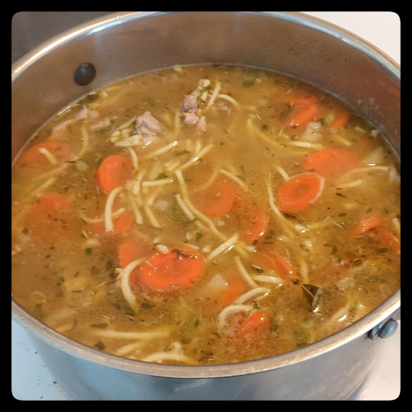

Chicken Noodle Soup
This will taste even better the next day, if there is any left.

chicken thighs or breasts, or leftover turkey
onion
celery
carrots
turnip
optionally potato
thyme
bay leaves
rosemary
sage
parsley
tarragon
celery seeds
red lentils
quinoa
pearl barley
fresh noodle nests
cilantro
spring onions
Put a kettle of water on to boil.
Add olive oil to a large pot.
Dice onions and celery and saute on medium heat.
Dice the chicken and add to the pot. Salt and pepper the chicken. Stir every few minutes.
Peel and slice carrots and add.
Peel and dice turnip and add.
Peel and dice a potato and add if you want.
Add thyme, bay leaves, rosemary, sage, parsley, a pinch of tarragon, celery seeds, and stir in.
Add about half cup each of red lentils, quinoa, and pearl barley.
Fill the pot with the previously boiled water and stir.
Cut two fresh noodle nests in quarters and add.
Chop fresh cilantro and add.
Cover and simmer on low heat for about 45 minutes, stirring every so often.
When ready to serve, stir in thinly sliced spring onions and more fresh chopped cilantro.